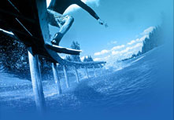

Wakeboarding
Wakeboarding is a surface water sport which involves riding a wakeboard over the surface of a body of water behind a boat. It was developed through a combination of water skiing, snowboarding and surfing techniques.
The rider is towed behind a boat; typically at speeds of 18-24 miles per hour depending on water conditions, rider's weight, board size, and most importantly, the riders personal preference. But wakeboarding can also be performed on a variety of media including closed-course cables, winches, PWCs, and ATVs.
Wakeboarding arose in the late 1980s after the advent of ski boarding. The actual sport of ski boarding is credited to Porter Daughtry (who invented the Skurfer in San Diego, CA) Jimmy Redmond (Austin, TX) later drilled holes in skurfers to affix bindings. The term "wakeboard" was coined by Porter Daughtry (Brooks, GA), as well as the concept and design, along with his brother Murray and a Pro snowboarder they sponsored. Paul approached Herb O'Brien with the idea and the introduction of the "liquid force" wakeboard, named by Eric "The Flyin Hawaiian" Perez, laid the groundwork for evolution of the wakeboard throughout the 1990s.
The World Skiboard Association was founded in 1989 and the First World Skiboard Championships was held on the Island of Kauai, Hawaii, on the Wailua River. The next year Eric Perez defended his title against Darin Shapiro. This is when the Hyperlite wakeboard was introduced and blew everyone away. The first US Nationals were held later that same year in Colorado Springs, CO on Prospect Lake, hosted by Tommy Phillips. Competitions began popping up around the United States throughout the early 1990s. Wakeboarding was added as a competitive sport in the X Games II. The World Skiboard Association "changed its focus" and was re-named the World Wakeboard Association.
Source:Wikipedia